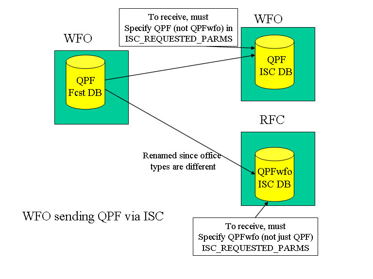
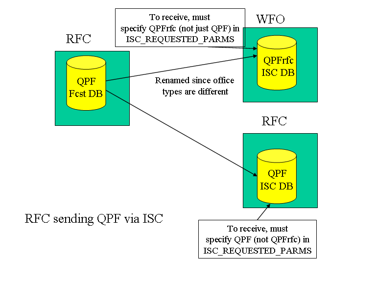
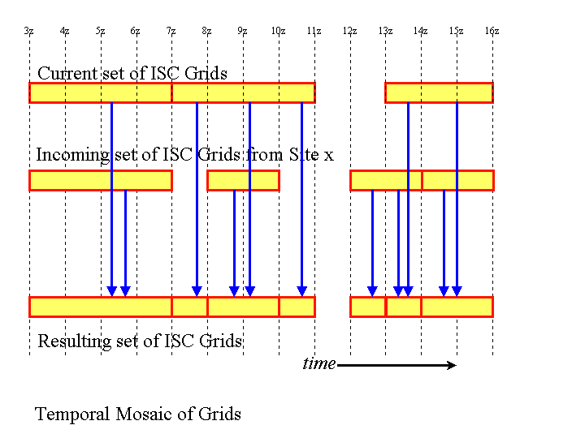
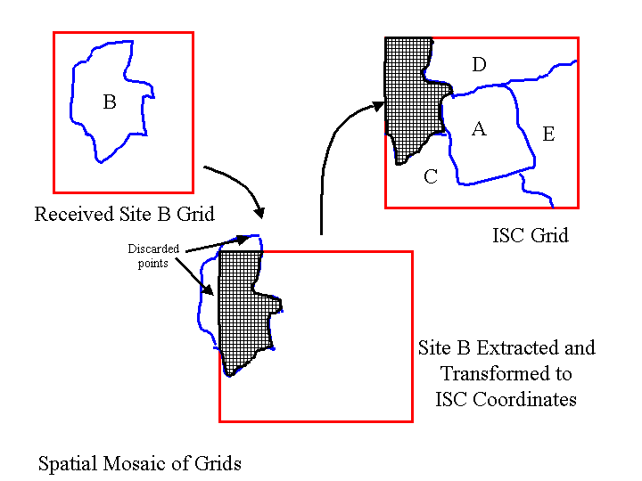

Intersite and Intrasite Coordination of Grids
September 28, 2008
This documentation covers the theory of operation, configuration,
and
how-to-use the intersite/intrasite coordination of grids feature
in GFESuite. The purpose of this software is to provide access to
forecast data from adjacent sites for purposes of determining whether
forecast
inconsistencies exist.
Table of Contents
Configuring Your System for
Intersite/Intrasite
Coordination of Grids
Beginning with OB8.3, the configuration of Intersite/Intrasite
coordination is done automatically through a central server. The
receiving site determines what data is desired and registers with a
central server for what is needed. As each other ifpServer
prepares to send ISC data, it checks with the central server to find
out the destinations.
All of your configuration needed to set up ISC is done through the
serverConfig/localConfig route. Refer to Intersite Coordination Configuration Items
for details.
Configuring the AWIPS system
The AWIPS WAN configuration is more complicated than the GFE
configuration.
Several
scripts are installed and several directories are created, the AWIPS
message
handler receive table is modified if
necessary.
A separate installation script called installISC
is
provided on the distribution CD in the file isc.tar.gz. The
script
performs
most of the necesssary setup tasks on the AWIPS MHS data server.
Refer to the release notes for details on
installing
the intersite coordination package on AWIPS.
Once the installISC is installed, your site will be able to
transmit
grids to your configured adjacent sites.
Sending Intersite
Coordination
Grids
Intersite coordination grids are sent in the following cases:
- The ISC_ROUTING_TABLE_ADDRESS points to a valid central server,
which is operational.
- The REQUEST_ISC is enabled to allow you to obtain ISC data.
- The SEND_ISC_ON_SAVE is enabled to allow you to transmit data
each time you save data.
Accessing
the Intersite Coordination Data
The intersite coordination data is placed in a singleton database with
the name of xxx_GRID__ISC_00000000_0000, where xxx is your site
identifier.
The database will appear in the WE
Volume Browser and hence weather elements can be loaded and
displayed.
The user may also write smart tools to provide consistency checkers if
desired. Refer to the Intersite Coordination
Training
Guide for more details on how the GFE operates with ISC data.
Data you receive from office types (e.g., wfo, rfc) different from your
own are renamed with the receiving office type appended to the
name. For example, if QPF data is sent from a RFC to a WFO,
then the data appears in the WFO's ISC database as QPFrfc.
Office Types and their Effect on ISC Data
The serverConfig
file defines each site's domain and office type. The
commonly used office types in the NWS are "wfo" and "rfc".
Requesting and receiving data from an office type that differs from
your own office type will cause the weather element to be renamed upon
storage into your ISC database.
The following picture illustrates the sending of ISC from a WFO to a
WFO and RFC. In the originating site's Fcst database is an
element called QPF. Sites that want this data via ISC will
register with the IRT and specify the weather element. For WFOs
who want this data, they will request the QPF weather element, since
the sender and receiver site office types are the same. For
RFCs who want this data, they will request the QPFwfo weather element,
since the server and receiver site office type are different. The
weather elements are renamed as they arrive into a site with a
different office type than the sender. The office type is
appended to the weather element name, but prior to the level
indicator. For example, QPF_SFC (SFC-surface) becomes QPFwfo_SFC
when received at an RFC. The list of weather elements to
request from other sites is defined in the ISC_REQUESTED_PARMS variable in
serverConfig/localConfig. For a WFO to receive QPF from
another WFO, QPF needs to be part of this variable. For a
RFC to receive QPF from a WFO, QPFwfo needs to be part of the variable.
The default list of weather elements to be requested will include all
weather elements defined in the ISC database. If is also
necessary to add the weather element to the ISC database if not already
defined by the EXTRA_ISC_PARMS
entry in serverConfig. Adding the element to the ISC database is
through the extraISCparms entry in
localConfig.

The following illustration shows the RFC sending QPF vis ISC to both
WFOs and RFCs. Again, the weather element is renamed when
it is received at a site of a different office type than the sender, in
this case the WFO. QPF is renamed to QPFrfc for the wfos and
remains QPF for RFCs.

Log
files for Intersite Coordination
The Intersite Coordination facility runs on two different machines
(linux
and the AWIPS data servers), and uses several different
processes.
This can make it difficult to determine whether the software is working
properly. This section outlines the location and contents of the
log files pertaining to the intersite coordination.
| Log File |
Machine |
Use |
File Name or Directory Name |
| iscExtract |
dx4 |
Main routine run on linux when sending isc grids. Lists time
sent,
number of bytes sent, wall clock time, cpu time, sites data sent to,
time
range of data, and weather elements. |
release/data/logfiles/DATEDIR/iscExtract*,
where release is the installation directory, typically
/awips/GFESuite/primary
for AWIPS. |
| iscDataRec |
mhs host |
Intersite coordination receive data script. Logs filename of
file received
(which contains the site identifier that sent the data), the size in
bytes,
and to which ifpServer (host/port) the data was sent to for further
processing |
release/data/logfiles/DATEDIR/iscDataRec* |
| ifpnetCDF |
dx4 |
Program that extracts data from the ifpServer and writes it
to a compressed
netCDF file. Raw file and compressed file sizes are listed.
Number
of grids processed per weather element is output. |
release/data/logfiles/DATEDIR/ifpnetCDF*,
where release is the installation directory, typically
/awips/GFESuite/primary
for AWIPS. |
| iscMosaic |
dx4 |
Program that extracts data from a compressed netCDF file
(written originally
from iscnetCdf) and uses mosaic techniques to merge the data into the
ifpServer. |
release/data/logfiles/DATEDIR/iscMosaic*,
where release is the installation directory, typically
/awips/GFESuite/primary
for AWIPS. |
ifpServer
Storage of ISC Grids
The ifpServer configuration is set to contain a new logical database,
called
ISC. The ISC database is a persistent database, like Fcst and
Official,
and will contain the same set of weather elements. The grids
contained
within the ISC database will be a composite of all of the adjoining
site's
intersite-coordination grids. Individual grids from each site
will
not be retained.
The grids that "this site" has sent out to other sites will also be
used in the ISC database to represent the CWA data.
Since the ISC is simply another GFESuite database, all of the tools
and capabilities within the GFE can be used with this database.
Weather elements have a designated "office type". Thus, when
grids are received from a site with a different office type (e.g., WFO
receiving grids from an RFC), the weather element is renamed and stored
into the ISC database with the "office type" designator.
This allows weather elements to be properly mosaicked without
overwriting data from other office types.
Mosaic
Technique
The mosaic technique (iscMosaic) merges in a supplied grid (or grids)
into
the database. The mosaic technique is done both spatially and
temporally.
Temporal Mosaic Technique
The temporal mosaic technique always uses two sources of data: the
incoming
grid from a site, and the existing grids within the ISC database.
Since incoming grids are processed one site at a site, this technique
will
work. The valid time ranges for existing grids within the ISC database
and the time ranges for received grids are compared and the "least
common
denominator" technique is used to determine all of the possible
permutations
of the time ranges. Basically if a grid comes in from an
adjoining
site that has a large time range, it will be inserted into several
existing
grids. If a grid comes in from a site with a small time range,
then
existing grids in the ISC database may be split.
This concept is for non-virtual ISC weather elements. Certain
virtual ISC weather elements may use a different mosaic algorithm.

Spatial Mosaic Technique
The spatial mosaic technique is used to combine pieces of grids
spatially
in order to produce a composite grid that contains a patchwork of grid
points from several sites. In the ifpServer, a series of edit
areas
are defined for each WFO. These are calculated automatically from
map shapefiles. The edit areas define the set of grid points that
are within each WFO's CWA and marine zones. The incoming
intersite
coordination data contains a sparsely populated grid, which indicators
on which grid points are valid. Since the incoming data grid may
not be on the same map projection, or have the same grid domain or
resolution,
the incoming data is mapped to the projection and domain within the ISC
database.
After the mosaic is completed, any grid points that remain undefined
in the ISC database will be set to the weather element's minimum
possible
value. This may lead to some confusion since the minimum possible
values are possible values. Note that the GFE and ifpServer do
not
currently have the capability of sparsely populated grids.

Controlling ISC Processing
through
Configurations
The GFESuite offers several configurable items to allow you to
controlling
the processing overhead. All of these options are available
through the Intersite Coordination
Configuration Items section in serverConfig.py. Sites
should create localConfig.py to override the defaults.
NOTE: All sites MUST
override the entries in serverConfig in order for them to enable ISC
processing and to send ISC. The default in the baseline is to
have ISC disabled.